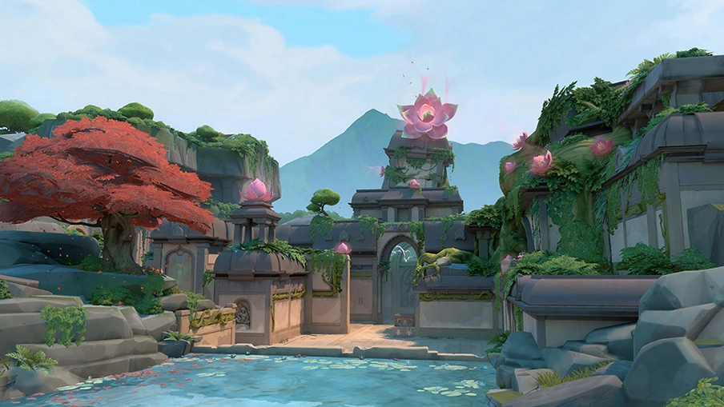

- Lotus é o mapa mais recente e o maior no jogo. É uma estrutura misteriosa com um condute astral que irradia poder ancestral. Grandes portas de pedra oferecem várias oportunidades de movimentação e revelam caminhos para três locais enigmáticos.
- Pearl é um mapa onde os Atacantes avançam em direção aos Defensores neste vibrante mundo subaquático com dois pontos principais. Pearl é um mapa sem mecânicas focado no ambiente. Encara a batalha em um meio compacto ou em áreas mais alongadas no nosso primeiro mapa situado na Terra Ômega.
- Fracture é um local de pesquisas altamente confidencial partido ao meio por um experimento com Radianita mal sucedido. Com opções tão divididas quanto o próprio mapa para os defensores, a escolha é tua: encara os atacantes na própria base deles ou prepare o terreno para um ataque iminente.

-Icebox uma área de escavação secreta da Kingdom retomada pela força do Ártico. Precisas ter cuidado com os terrenos horizontais dos dois pontos principais, que são protegidos por neve e metal. Aproveita para usar as tirolesas, e os teus inimigos nunca verão o teu ataque iminente.
- Bind é um mapa de apenas dois pontos principais, diretamente para os Atacantes, e contem dois teletransportadores de sentido único, um em cada ponta do mapa.
- Heaven é sobre um mosteiro abandonado, com três pontos distintos, contendo um no meio. Em compensação, os defensores também conseguem aproveitar o território extra para coordenar investidas mais agressivas.